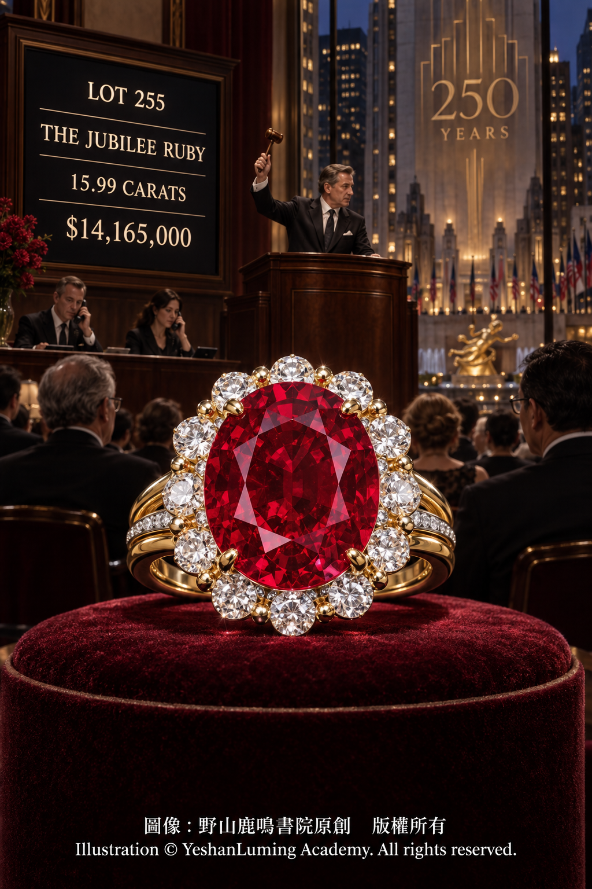

禧年紅寶石 · 十五克拉緬甸紅寶石的美國拍賣里程碑The Jubilee Ruby · A Fifteen-Carat Burmese Ruby’s Milestone in American Auction History
The World of Gemstones · Ruby SeriesThe Jubilee Ruby · A Fifteen-Carat Burmese Ruby’s Milestone in American Auction History
The World of Gemstones · Ruby Series禧年紅寶石 · 十五克拉緬甸紅寶石的美國拍賣里程碑
寶石世界·紅寶石篇
寶石世界·紅寶石篇（114）The World of Gemstones · Ruby Series (114)
在國際彩色寶石收藏界，人們有時會說：「鑽石求大，紅寶石求精。」這句話雖然不是嚴格的寶石學定律，卻道出了高品質大型紅寶石極為罕見的事實。
紅寶石的紅色主要來自剛玉晶體中的微量鉻元素。鉻在賦予剛玉美麗紅色的同時，也可能增加晶體生長過程中的應力，使紅寶石更容易形成裂隙。因此，重量、顏色、透明度和完整性俱佳的大顆粒天然紅寶石，在自然界中非常罕見。
當一顆紅寶石的重量超過5克拉時，如果仍然具有鮮明的顏色、良好的透明度和理想的切工，便足以進入高端收藏市場；當重量超過15克拉，而且產自緬甸、未經加熱處理，其稀有程度更會提升到另一個層次。
2016年4月20日，佳士得在紐約洛克斐勒中心舉行瑰麗珠寶拍賣會。一顆重達15.99克拉、名為「禧年紅寶石」（The Jubilee Ruby）的緬甸紅寶石，作為全場最受矚目的拍品，被安排在最後登場。
這顆紅寶石鑲嵌在一枚由著名美國珠寶品牌Verdura設計的戒指上。15.99克拉的主石周圍環繞著圓形切割鑽石與拋光黃金，戒環採用具有層次感的三分式結構，整枚戒指以鉑金及18K黃金製成。
黃金的溫暖色調襯托出紅寶石深厚而鮮明的紅色，鑽石的白色光芒則為中央主石增添明亮的襯托。這件作品既保留了大型紅寶石應有的莊重感，也展現出Verdura設計中鮮明而富有力量的色彩語言。
競拍價格從1,000萬美元開始。隨著幾位電話競標者陸續出價，原本坐滿賓客的拍賣廳逐漸安靜下來。最終，拍賣官以1,250萬美元落槌；計入買家佣金及相關費用後，成交總價達到14,165,000美元。
按照成交總價計算，禧年紅寶石的每克拉平均價格約為885,866美元，也就是每克拉約88.6萬美元。
這一成交結果，使它成為當時美國拍賣史上成交價格最高的彩色寶石。
早在拍賣前，佳士得便為它進行廣泛宣傳，稱它為二十五年來在美國拍賣市場出現的最重要的緬甸紅寶石。這一評價反映了佳士得對其重量、產地、顏色、透明度、無加熱狀態及整體品質所作出的綜合判斷。
這場拍賣恰逢佳士得創立250周年。「Jubilee」本身帶有慶典與紀念的含義，這個名字也使禧年紅寶石與佳士得的重要歷史節點產生了特殊聯繫，更為這場拍賣增添了一層紀念色彩。
在國際彩色寶石收藏界，人們有時會說：「鑽石求大，紅寶石求精。」這句話雖然不是嚴格的寶石學定律，卻道出了高品質大型紅寶石極為罕見的事實。
紅寶石的紅色主要來自剛玉晶體中的微量鉻元素。鉻在賦予剛玉美麗紅色的同時，也可能增加晶體生長過程中的應力，使紅寶石更容易形成裂隙。因此，重量、顏色、透明度和完整性俱佳的大顆粒天然紅寶石，在自然界中非常罕見。
當一顆紅寶石的重量超過5克拉時，如果仍然具有鮮明的顏色、良好的透明度和理想的切工，便足以進入高端收藏市場；當重量超過15克拉，而且產自緬甸、未經加熱處理，其稀有程度更會提升到另一個層次。
2016年4月20日，佳士得在紐約洛克斐勒中心舉行瑰麗珠寶拍賣會。一顆重達15.99克拉、名為「禧年紅寶石」（The Jubilee Ruby）的緬甸紅寶石，作為全場最受矚目的拍品，被安排在最後登場。
這顆紅寶石鑲嵌在一枚由著名美國珠寶品牌Verdura設計的戒指上。15.99克拉的主石周圍環繞著圓形切割鑽石與拋光黃金，戒環採用具有層次感的三分式結構，整枚戒指以鉑金及18K黃金製成。
黃金的溫暖色調襯托出紅寶石深厚而鮮明的紅色，鑽石的白色光芒則為中央主石增添明亮的襯托。這件作品既保留了大型紅寶石應有的莊重感，也展現出Verdura設計中鮮明而富有力量的色彩語言。
競拍價格從1,000萬美元開始。隨著幾位電話競標者陸續出價，原本坐滿賓客的拍賣廳逐漸安靜下來。最終，拍賣官以1,250萬美元落槌；計入買家佣金及相關費用後，成交總價達到14,165,000美元。
按照成交總價計算，禧年紅寶石的每克拉平均價格約為885,866美元，也就是每克拉約88.6萬美元。

Click to enlarge
這一成交結果，使它成為當時美國拍賣史上成交價格最高的彩色寶石。
早在拍賣前，佳士得便為它進行廣泛宣傳，稱它為二十五年來在美國拍賣市場出現的最重要的緬甸紅寶石。這一評價反映了佳士得對其重量、產地、顏色、透明度、無加熱狀態及整體品質所作出的綜合判斷。
這場拍賣恰逢佳士得創立250周年。「Jubilee」本身帶有慶典與紀念的含義，這個名字也使禧年紅寶石與佳士得的重要歷史節點產生了特殊聯繫，更為這場拍賣增添了一層紀念色彩。
禧年紅寶石之所以能夠引起國際收藏界的高度關注，首先在於它非同尋常的重量。
大型紅寶石並不一定都具有寶石級品質。有些晶體雖然重量可觀，卻可能顏色過暗、裂隙較多或透明度不足。禧年紅寶石的最難得之處，是在15.99克拉的重量下，仍然保持了鮮明的紅色、良好的透明度與細緻的純淨度。
佳士得將其描述為一顆接近圓形的橢圓形刻面紅寶石。這種輪廓既保存了原石的重要重量，也使這顆鑲嵌在戒指中央的紅寶石呈現出飽滿、均衡而莊重的視覺效果。
拍賣前，禧年紅寶石分別獲得美國寶石實驗室（American Gemological Laboratories，AGL）、瑞士寶石學院（SSEF）及瑞士古柏林寶石實驗室（Gübelin Gem Lab）出具的鑑定報告。
三家實驗室均認為這顆紅寶石產自緬甸，並且沒有發現加熱跡象。
其中，AGL給予這顆紅寶石其最高級別的TQIR「Exceptional」評價，也就是「卓越」級別。
SSEF則指出，這是一顆天然透明紅寶石，具有令人矚目的15.991克拉重量、鮮明而迷人的紅色，以及良好的純淨度。SSEF在顯微鏡下觀察到的包裹體特徵，與緬甸莫谷古典紅寶石礦床的特徵相符。
SSEF還指出，這顆寶石鮮明的紅色，來自內部微量元素之間良好的平衡；更重要的是，它沒有經歷人工加熱，其顏色與純淨度均保持天然狀態。
古柏林寶石實驗室也認為，其寶石學特徵與產自緬甸的紅寶石一致，並且沒有發現加熱跡象。
三家實驗室的結論，共同確立了禧年紅寶石最重要的收藏基礎：緬甸來源、天然顏色，以及未經加熱處理。
部分市場文章曾經把禧年紅寶石的顏色稱為「鴿血紅」，但佳士得公開圖錄並未列出GRS鑑定報告，圖錄所載的三家實驗室文件也主要使用「鮮明紅色」或「迷人的鮮明紅色」等描述，沒有把「Pigeon Blood」列為這顆紅寶石的正式顏色評級。
因此，對這顆紅寶石更為嚴謹的說法，是它具有鮮明而濃郁的紅色，而不應把「GRS鴿血紅」當作已經獲得證實的實驗室評級。
從地質學的角度看，莫谷紅寶石主要形成於大理岩型礦床。這類紅寶石通常具有較低的鐵含量，在適當條件下有利於紅色螢光的呈現，使寶石的紅色看起來更加明亮，彷彿光線從晶體內部散發出來。
不過，目前公開的禧年紅寶石鑑定資料，並沒有列出其鉻、鐵含量或紫外螢光強度的具體測量數據。因此，我們目前可以確認的是，它具有鮮明的紅色、良好的透明度與細緻的純淨度。
作為天然紅寶石，禧年紅寶石屬於剛玉礦物，具有莫氏硬度9、折射率通常約為1.762—1.770、雙折射約為0.008、相對密度約為4.00等基本物理性質。然而，這些物理數據只能說明紅寶石作為礦物的基本特徵，不能單獨解釋禧年紅寶石的全部價值。真正使它脫穎而出的，是重量、顏色、透明度、產地、未經加熱狀態、切工及Verdura設計共同形成的整體品質。
在國際拍賣市場上，大克拉緬甸紅寶石的價值從來不是由重量單獨決定的。只有當重量與色彩、透明度、純淨度及天然狀態達到罕見平衡時，一顆紅寶石才可能引起世界級收藏家的競逐。
禧年紅寶石正是這種罕見平衡的代表。
它的高價成交，並不能證明投資紅寶石必然比投資股票穩健，也不能保證所有高品質紅寶石的升值幅度都能超越通貨膨脹。高檔紅寶石的價格仍然受到品質、證書、產地、珠寶品牌、歷史來源、流動性、交易成本及市場週期等多種因素影響。
但是，1,416.5萬美元的成交結果，確實反映了國際高端收藏市場對大克拉、無加熱緬甸紅寶石的高度重視，也使禧年紅寶石成為研究頂級紅寶石稀缺性與拍賣市場的重要案例。
禧年紅寶石的故事，是地質奇蹟、寶石鑑定、高級珠寶設計與現代拍賣市場的一次交會。
大自然用漫長歲月形成了一顆接近16克拉的紅寶石；Verdura以黃金、鉑金與鑽石為它建立舞台；三家權威實驗室確認了它的緬甸來源與無加熱狀態；而紐約佳士得的拍賣槌，則為它在現代彩色寶石史上留下了一個清晰的價格坐標。
它最值得紀念的，不僅是1,416.5萬美元的成交數字，更是它向世人展示了一顆大型緬甸天然無燒紅寶石，在重量、色彩、透明度與歷史機遇彼此交會時，能夠達到怎樣令人驚嘆的價值高度。
禧年紅寶石主要資料
名稱： 禧年紅寶石
英文名稱： The Jubilee Ruby
寶石種類： 天然紅寶石
重量： 15.99克拉；SSEF精確記錄為15.991克拉
產地： 緬甸；SSEF認為其顯微特徵與莫谷古典紅寶石礦床相符
處理狀態： 沒有發現加熱跡象
顏色： 鮮明而濃郁的紅色
切工： 近圓形橢圓刻面切工
透明度與純淨度： 透明，具有良好純淨度
戒指品牌： Verdura
戒托材質： 鉑金及18K黃金
配石： 圓形切割鑽石
戒指設計： 鑽石與拋光黃金圍繞主石，搭配三分式黃金戒環
鑑定機構： 美國寶石實驗室（AGL）、瑞士寶石學院（SSEF）、瑞士古柏林寶石實驗室（Gübelin Gem Lab）
拍賣日期： 2016年4月20日
拍賣行： 紐約佳士得
拍賣專場： 瑰麗珠寶（Magnificent Jewels）
拍賣估價： 1,200萬至1,500萬美元
落槌價格： 1,250萬美元
成交總價： 14,165,000美元，包含買家佣金及相關費用
平均每克拉成交價： 約885,866美元
拍賣紀錄： 當時美國拍賣史上成交價格最高的彩色寶石
歷史地位： 被佳士得形容為二十五年來在美國拍場出現的最重要緬甸紅寶石
（未完待續）
In the international world of colored gemstone collecting, people sometimes say, “With diamonds, seek size; with rubies, seek refinement.” Although this is not a strict gemological law, it expresses a fundamental truth: large rubies of exceptional quality are extraordinarily rare.
The red color of ruby comes primarily from trace amounts of chromium within the corundum crystal. While chromium gives corundum its beautiful red hue, it may also increase stress during crystal growth, making fractures more likely to develop. For this reason, large natural rubies that combine substantial weight, fine color, good transparency, and structural integrity are exceedingly rare in nature.
Once a ruby exceeds 5 carats, it may enter the realm of high-end collecting if it still possesses vivid color, good transparency, and an attractive cut. When its weight surpasses 15 carats—and it is both Burmese in origin and unheated—its rarity rises to an entirely different level.
On April 20, 2016, Christie’s held its Magnificent Jewels auction at Rockefeller Center in New York. The most eagerly anticipated lot of the sale—a 15.99-carat Burmese ruby known as the Jubilee Ruby—was reserved for the finale.
The ruby was mounted in a ring designed by Verdura, the celebrated American jewelry house. The 15.99-carat center stone was surrounded by circular-cut diamonds and polished gold, while the ring featured a distinctive trifurcated hoop and was mounted in platinum and 18-karat gold.
The warmth of the gold accentuated the ruby’s deep, vivid red, while the white brilliance of the diamonds provided a luminous contrast to the central stone. The jewel preserved the dignity befitting a ruby of such magnitude while also displaying the bold and powerful language of color characteristic of Verdura’s designs.
Bidding opened at $10 million. As several telephone bidders continued to raise their offers, the crowded saleroom gradually fell silent. The auctioneer ultimately brought down the hammer at $12.5 million; with the buyer’s premium and related fees included, the final price reached $14,165,000.
Calculated from the final sale price, the Jubilee Ruby achieved an average of approximately $885,866 per carat—or about $886,000 per carat.
The result made it, at the time, the most expensive colored gemstone ever sold at auction in the United States.
Even before the sale, Christie’s had promoted it extensively, describing it as the most important Burmese ruby to appear at auction in the United States in twenty-five years. This assessment reflected Christie’s overall judgment of its weight, origin, color, transparency, unheated condition, and exceptional quality.
The auction also coincided with the 250th anniversary of Christie’s. The word “Jubilee” itself carries connotations of celebration and commemoration, and the name gave the ruby a special connection to this important milestone in Christie’s history, adding another commemorative dimension to the sale.
In the international world of colored gemstone collecting, people sometimes say, “With diamonds, seek size; with rubies, seek refinement.” Although this is not a strict gemological law, it expresses a fundamental truth: large rubies of exceptional quality are extraordinarily rare.
The red color of ruby comes primarily from trace amounts of chromium within the corundum crystal. While chromium gives corundum its beautiful red hue, it may also increase stress during crystal growth, making fractures more likely to develop. For this reason, large natural rubies that combine substantial weight, fine color, good transparency, and structural integrity are exceedingly rare in nature.
Once a ruby exceeds 5 carats, it may enter the realm of high-end collecting if it still possesses vivid color, good transparency, and an attractive cut. When its weight surpasses 15 carats—and it is both Burmese in origin and unheated—its rarity rises to an entirely different level.
On April 20, 2016, Christie’s held its Magnificent Jewels auction at Rockefeller Center in New York. The most eagerly anticipated lot of the sale—a 15.99-carat Burmese ruby known as the Jubilee Ruby—was reserved for the finale.
The ruby was mounted in a ring designed by Verdura, the celebrated American jewelry house. The 15.99-carat center stone was surrounded by circular-cut diamonds and polished gold, while the ring featured a distinctive trifurcated hoop and was mounted in platinum and 18-karat gold.
The warmth of the gold accentuated the ruby’s deep, vivid red, while the white brilliance of the diamonds provided a luminous contrast to the central stone. The jewel preserved the dignity befitting a ruby of such magnitude while also displaying the bold and powerful language of color characteristic of Verdura’s designs.
Bidding opened at $10 million. As several telephone bidders continued to raise their offers, the crowded saleroom gradually fell silent. The auctioneer ultimately brought down the hammer at $12.5 million; with the buyer’s premium and related fees included, the final price reached $14,165,000.
Calculated from the final sale price, the Jubilee Ruby achieved an average of approximately $885,866 per carat—or about $886,000 per carat.
Click to enlarge
The result made it, at the time, the most expensive colored gemstone ever sold at auction in the United States.
Even before the sale, Christie’s had promoted it extensively, describing it as the most important Burmese ruby to appear at auction in the United States in twenty-five years. This assessment reflected Christie’s overall judgment of its weight, origin, color, transparency, unheated condition, and exceptional quality.
The auction also coincided with the 250th anniversary of Christie’s. The word “Jubilee” itself carries connotations of celebration and commemoration, and the name gave the ruby a special connection to this important milestone in Christie’s history, adding another commemorative dimension to the sale.
The extraordinary weight of the Jubilee Ruby was the first reason it attracted such intense attention from the international collecting community.
A large ruby is not necessarily of gem quality. Some crystals may possess impressive weight but suffer from overly dark color, numerous fractures, or insufficient transparency. What makes the Jubilee Ruby so remarkable is that, despite weighing 15.99 carats, it still retains vivid red color, good transparency, and fine purity.
Christie’s described it as an oval-shaped faceted ruby with an almost circular outline. This form preserved significant weight from the original rough while giving the ruby at the center of the ring a full, balanced, and dignified visual presence.
Before the auction, the Jubilee Ruby was accompanied by gemological reports from the American Gemological Laboratories (AGL), the Swiss Gemmological Institute SSEF, and the Gübelin Gem Lab.
All three laboratories concluded that the ruby originated in Burma and showed no indications of heating.
AGL awarded the ruby its highest TQIR classification of “Exceptional.”
SSEF stated that it was a natural transparent ruby of the remarkable weight of 15.991 carats, possessing an attractive vivid color combined with fine purity. The inclusions observed by SSEF under microscopic examination displayed characteristics associated with the classical ruby mines of the Mogok Valley in Burma.
SSEF further noted that the ruby’s attractive vivid red color resulted from a well-balanced combination of trace elements within the gemstone. More importantly, it had been spared exposure to heat treatment, leaving both its color and purity entirely natural.
The Gübelin Gem Lab likewise concluded that its gemological characteristics were consistent with those of rubies originating in Burma and found no indications of heating.
Together, the findings of these three laboratories established the Jubilee Ruby’s most important foundations of collectibility: Burmese origin, natural color, and the absence of heat treatment.
Some market articles have described the Jubilee Ruby as “pigeon’s blood” red. However, Christie’s published catalogue did not list a GRS report, and the documents from the three laboratories cited in the catalogue principally used descriptions such as “vivid red” and “attractive vivid red.” None presented “Pigeon Blood” as the ruby’s formal color grade.
The more rigorous description, therefore, is that the Jubilee Ruby possesses a vivid and richly saturated red color. “GRS-type Pigeon’s Blood” should not be treated as a laboratory grade that has been verified for this particular stone.
From a geological perspective, rubies from Mogok are primarily associated with marble-hosted deposits. Rubies of this type generally contain relatively low levels of iron, which, under suitable conditions, can favor the appearance of red fluorescence and make the stone seem brighter—as though its light were emanating from within the crystal itself.
However, the publicly available reports for the Jubilee Ruby do not provide specific measurements of its chromium content, iron content, or ultraviolet fluorescence intensity. What can be confirmed is that it possesses vivid red color, good transparency, and fine purity.
As a natural ruby, the Jubilee Ruby belongs to the corundum mineral species. Ruby has a Mohs hardness of 9, a typical refractive-index range of approximately 1.762–1.770, birefringence of about 0.008, and a relative density of approximately 4.00. Yet these physical data describe only the fundamental mineralogical properties of ruby; they cannot, by themselves, explain the full value of the Jubilee Ruby. What truly distinguishes it is the combined quality of its weight, color, transparency, origin, unheated condition, cut, and Verdura setting.
In the international auction market, the value of a large Burmese ruby is never determined by weight alone. Only when size, color, transparency, purity, and natural condition achieve a rare balance can a ruby inspire competition among world-class collectors.
The Jubilee Ruby is a compelling example of precisely such a balance.
Its high sale price does not prove that investing in rubies is necessarily more secure than investing in stocks, nor does it guarantee that every fine ruby will appreciate faster than inflation. The prices of high-end rubies remain influenced by numerous factors, including quality, laboratory documentation, geographic origin, jewelry brand, historical provenance, liquidity, transaction costs, and market cycles.
Nevertheless, the $14.165 million result clearly demonstrated the importance placed by the international high-end collecting market on large, unheated Burmese rubies. It also established the Jubilee Ruby as an important case study in both the rarity of exceptional rubies and the workings of the auction market.
The story of the Jubilee Ruby represents a meeting of geological wonder, gemological authentication, high-jewelry design, and the modern auction market.
Nature spent immense spans of time creating a ruby of nearly 16 carats; Verdura built a stage for it in gold, platinum, and diamonds; three authoritative laboratories confirmed its Burmese origin and unheated condition; and the auctioneer’s hammer at Christie’s New York established a clear price benchmark for it in the modern history of colored gemstones.
What makes the Jubilee Ruby worthy of remembrance is not merely its $14.165 million sale price. It also revealed to the world the astonishing level of value that a large, natural, unheated Burmese ruby can attain when exceptional weight, color, transparency, and historical opportunity converge.
Essential Information About the Jubilee Ruby
Name: Jubilee Ruby
English Name: The Jubilee Ruby
Gemstone Variety: Natural ruby
Weight: 15.99 carats; recorded by SSEF more precisely as 15.991 carats
Origin: Burma; SSEF found its microscopic characteristics consistent with those of the classical ruby mines of Mogok
Treatment Status: No indications of heating
Color: Vivid and richly saturated red
Cut: Nearly circular oval faceted cut
Transparency and Purity: Transparent, with fine purity
Ring Brand: Verdura
Mounting: Platinum and 18-karat gold
Accent Stones: Circular-cut diamonds
Ring Design: The central ruby is surrounded by diamonds and polished gold, with a trifurcated gold hoop
Gemological Laboratories: American Gemological Laboratories (AGL), Swiss Gemmological Institute SSEF, and Gübelin Gem Lab
Auction Date: April 20, 2016
Auction House: Christie’s New York
Auction: Magnificent Jewels
Pre-Sale Estimate: $12 million–$15 million
Hammer Price: $12.5 million
Final Sale Price: $14,165,000, including the buyer’s premium and related fees
Average Price per Carat: Approximately $885,866
Auction Record: At the time, the most expensive colored gemstone ever sold at auction in the United States
Historical Significance: Described by Christie’s as the most important Burmese ruby to appear at auction in the United States in twenty-five years
(To be continued)